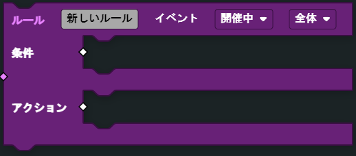

ルール
ルール
ルール
ルールブロックは、ゲーム内のイベントからトリガーされます。 イベントがトリガーされると、このブロックはその条件が満たされているかどうかを確認し、アクションのすべてを実行します。
次の例では、条件は、プレイヤーがキルを獲得したときに、そのチームが目標スコアに達しているかどうかをチェックしています。そして、アクションが実行され、この場合、プレイヤーの勝利としてゲームモードを終了します。
ルール ブロックイベントの種類
- 開催中
- 開催中 イベントタイプは、 その条件 がTrueになったかどうかを継続的にチェックします。その場合、 アクションが一度だけ実行されます。イベントが再び実行されるには、条件 が再びTrueになる前にFalseになる必要があります。開催中 イベントタイプは、 全体、プレイヤー、チームのコンテキスト に存在します。プレイヤーとチームコンテキスト内では、イベントプレイヤーやイベントチームなどのペイロード値ブロックを使用して、イベント内の特定のプレイヤーやチームを参照することができます。
注釈
注：FFAでは、開催中 チームは一切実行されません。
- プレイヤー被キル時
- これは プレイヤー がキルされるたびにトリガーされます。ペイロード：イベントプレイヤー（キルされたプレイヤー）、イベント その他のプレイヤー（キルを行ったプレイヤー）
- プレイヤー出撃時
- これは、 プレイヤー が出撃するたびにトリガーされます。ペイロード：イベントプレイヤー （出撃したプレイヤー）
- プレイヤーのゲーム参加時
- これは、 プレイヤー がゲームに参加した時にトリガーされます。ペイロード：イベントプレイヤー（参加したプレイヤー）
- プレイヤーのゲーム離脱時
- これは、プレイヤーがゲームを離脱したときにトリガーされます。
- プレイヤーキル時
- これは、 プレイヤー が 他のプレイヤー に対してキルを獲得したときにトリガーされます。ペイロード：イベントプレイヤー（キルを行ったプレイヤー）、イベント その他のプレイヤー（キルされたプレイヤー）
- ゲームモード終了時
- ゲームモード終了時にトリガーされます。
- ダウン時
- これは、 プレイヤー が強制的にダウン状態になったときにトリガーされます。ペイロード：イベントプレイヤー（ダウンしたプレイヤー）
- 蘇生時
- これは、 プレイヤーが他のプレイヤー によって蘇生されたときにトリガーされます。ペイロード：イベントプレイヤー（蘇生されたプレイヤー）、イベント その他のプレイヤー（蘇生したプレイヤー）
- 制限時間経過時
- ゲームモードの制限時間に達したときにトリガーされます。
- ゲームモード開始時
- ゲームモードの開始時にトリガーされます。
- プレイヤー死亡時
- これは、プレイヤー がキルされて出撃画面に戻ったときにトリガーされます。ペイロード：イベントプレイヤー （キルされたプレイヤー）
条件

ブールの入力に基づいて、ルールまたはサブルーチン を実行するための条件を評価します。
- パラメーター
ブール